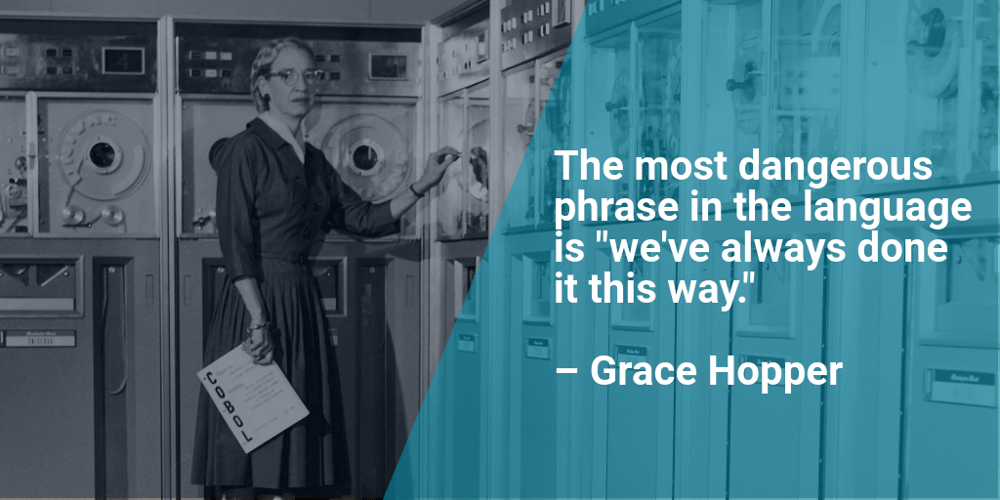

Source:
Enable Slave Window
Single Page
Update

loading presentation...
| z, ? | toggle help (this) |
| space, → | next slide |
| shift-space, ← | previous slide |
| d | toggle debug mode |
| ## <ret> | go to slide # |
| r | reload slides |
Good morning everyone. I am excited and honored to be presenting here at RubyConf.|Today I will be speaking about my experiences running the programming unit for a small government department for the last 15 years, using Ruby as the main programming language for the last 13.
My name is Jeremy Evans, and I have been using Ruby since 2004. I am the maintainer of numerous ruby libraries,

the most popular of which is Sequel, the database toolkit for Ruby. I also maintain a web toolkit for Ruby named Roda, as well as an authentication framework named Rodauth that builds on top of Sequel and Roda.


Now, I did not start out wanting to maintain these and a bunch of other Ruby libraries. The reason I maintain these libraries is because they form the core of many personal projects as well as the core of the applications I am responsible for at work.
I work for the California State Auditor. Our office is in the capital of California, Sacramento, but our auditors work all over the state.|The mission of our department is to promote efficient and effective government by performing independent evaluations of other government departments. We publish reports of our audit findings, and make recommendations to other government departments and the Legislature.

Our equivalent at the national level here in the United States would be the Government Accountability Office. All 50 states have a equivalent office to ours, though the degree of independence and exact responsibilities vary state-to-state.
Before I go any further, please be advised that all opinions in this presentation, and especially the following section, are my personal opinions, and not the opinions of my department.
I would now like to talk about software development as it is typically done at other departments in my state, though I will simplify it substantially in the interests of time, and exaggerate slightly, only slightly, for comedic effect. I am not sure how similar it is in other states or countries, but I am guessing there is some overlap.
Government software development resolves around large projects. In most cases, there is an existing system in place, but it has various warts, such as running on a mainframe. So executives get the idea of building a modern system, and throwing away the previous system.
After the government gets the idea that they may want to develop a modern system, before they can even start the process, they’ll spend a year going through a 4-step project approval process with the Department of Technology.|This is not one of the times I am exaggerating even slightly, the median time for the project approval process is over a year.
After approval, the government will start by developing a long request for proposal detailing what they think the requirements are for the system. The request for proposal will be prepared by program managers and analysts, without the involvement of the internal developers who maintain the current system.|Then the government will solicit proposals from companies to build the system. After removing proposals that are not considered acceptable, the government will follow standard government purchasing regulations and award the contract to build the system to the company with the lowest bid.
Payment on the contract will be based on a checklist of deliverables. There will be little consideration for how easy the software is to use, and no consideration for how easy the software will be to maintain.
The contractor will build the system using their own developers, who are incentivized to check off the deliverables as quickly as possible. The contractors will use C# if using a Microsoft stack or Java otherwise. Near the end of the contract, the contractor will attempt to train government staff on how to maintain the system.
There will be minimal if any unit or model testing done during development. There will be decent integration or acceptance testing, but the testing will be performed manually using checklists by government employees, the system contractor, or an external independent validation and verification vendor.
In some cases, the contractor will base their solution on an existing expensive enterprise resource planning system such as a SAP or Peoplesoft, and then the contractor will heavily customize the installation to meet the system requirements.|This will allow the contractor to claim that they are just using common off the shelf software in their proposal, when in reality so much custom work will be done that most of the benefits of using common of the shelf software would not apply.
There will be a large amount of oversight of the project. The project managers will write quarterly progress reports, and send them to executive management, the Department of Technology, and an external independent project oversight company.|When the project runs into problems during development, the stakeholders overseeing the project will be aware.
However, as the stakeholders are not experts in software development, other than approving the expenditure of more money to hire additional developers or lengthening the project schedule, there will not be much they can do to fix the problems. And I think most of us know how well adding developers to a late project actually works.

As you might be able to guess, I am not a fan of this approach for building software. I will now share the alternative approach to software development that we use in our department.|Now, this is not a fair comparison, as our department is small and not similar to other departments.
First, we try as much as possible to avoid building large systems. If stakeholders request a large system, we discuss the situation with them and try to convince them to build a smaller system initially that only does what is most important. In some cases, we are successful, in some cases we are not, but we always try to reduce the initial scope if a large system is requested. We can always add more features later, after the system is working, that is what we tell people.|The idea that you should start with a working simple system before expanding the complexity, instead of trying to build a complex system from the start, has been around for decades.
John Gall wrote a book called Systemantics back in 1975, which discusses how systems work and how they fail.

A couple sentences in that book eventually became referred to as Gall’s Law.
Gall’s Law states that a complex system that works is invariably found to have evolved from a simple system that worked. A complex system designed from scratch never works and cannot be patched up to make it work. You have to start over with a working simple system.| Note that Gall was not referring to software development, he was discussing systems in general, be they computer based, mechanical, or manual.
We have Gall’s Law in mind when we build systems in our department. In general, we try to add them as subsystems or new features to our existing working systems. We aim to complete the development of almost all projects in under a month, with the majority being completed in under a week.|When I say completed, I mean having all features implemented with complete automated tests. Systems may take longer to go into production due to delays in getting final approval from the stakeholders that requested the system. In my experience, stakeholders are quick to give approval to build a system, and less quick to give approval to start using a system after it is built.
A typical project for us would be to take a paper form based process with one or two levels of review and integrate it into our intranet site. There would be an online form for employees to complete, forms for the reviewers to approve or deny the request, emails for notifying the next reviewer at each step, and reports for the employee, reviewers, and management to see the status of requests.
We build all of these systems internally using government staff, with no use of contractors. The developer responsible for building the system will meet directly with all interested stakeholders to determine requirements.
Often, stakeholders will request we add features to the system that are not strictly needed, or will request a specific feature that they think will meet their needs, instead of just letting the developer know what their needs actually are.|It is the developer’s job to discuss the system requirements with the stakeholders, figure out what features are important, what the underlying needs actually are, and then build the simplest system that will meet the needs of the stakeholders.
The developer responsible for building the system knows that they will be responsible for maintaining the system when it is in production, which encourages them to design the system in a way that will make maintenance easiest.
The developer also knows that if users have trouble using the system, they will be the one to listen and respond to the users’ complaints, and it will be their job to modify the system to make it easier to use. This encourages the developer to design the system to be easy to use, so they do not have to make such modifications in the future.
As the title of this presentation suggests, all of our internal development is done in Ruby. Ruby has been our primary development language for new projects since mid-2005, and all of our existing internal systems were converted to Ruby by 2009. I will talk a little bit later about the stack we use and how it has evolved over time.

We do not have a large amount of oversight during our development process.
The only external oversight is from external security assessments and penetration tests, which are each performed every 3 years.
In terms of internal oversight, the developer will work on the system until they think it is ready. If they run into problems during development and need help, then they will talk to me and we will pair program to fix the problem. After the developer thinks the system is complete, then they will request a code review from me. I will review all of the code, provide a list of requested changes, and that process will repeat until all issues have been addressed.
After a clean code review, the developer will notify the stakeholders, who will use a development version of the system and see if it meets their needs. The stakeholders may request changes at that point, in which case we will discuss the changes with them and agree on how to handle the situation, similar to the initial discussion with them regarding requirements.
Before any of our systems go into production, we require automated testing at the model level and web level for all parts of the system. We perform coverage testing on a regular basis for all of our applications, and our line coverage is between 93 and 100 percent depending on the system.
Since we prefer to build small systems instead of large systems, we generally have multiple outstanding requests to build systems at any point in time. So one of the issues we deal with is how to prioritize the requests.
One of the things we consider is the size of the request. We try to build smaller systems before larger ones. Hopefully this encourages stakeholders to be more willing to accept a smaller system.
Another thing we consider is how often the system will be used. If this system automates a manual paper form-based process, we will ask: how many forms are submitted per month? Depending on the volume, we may give the system high priority, or even tell the requester that due to the low volume, it does not make sense to automate the process.
We also try to consider how important the system is to the organization. If the current process is paper form-based, we will ask: what the consequences are of losing a form? If there are legal issues, we may want to automate a system with low volume just to ensure we can closely track progress to make sure we are following the law.
Finally, we consider who is requesting the system. As much as we like to be egalitarian, if the requester is an executive and they want us to give the system priority, then the system will get priority.
So, what do we use Ruby for? I mentioned that Ruby is the sole language we use for software development, so this is basically the same question as: what software development do we do?
As you may expect, the primary software development we do is web applications.
Our largest application is our intranet site, called The Hub. The majority of our development is adding new features to The Hub.|The Hub has some pretty standard intranet features. It contains a lot of information on internal processes, our comprehensive manual, and our employee directory.
Each employee has a profile page showing information about the employee, such as their division and position, audits they have worked on, audits they are currently working on, and awards they have received.
The employee’s profile page also has a link to a map of the floor that they work on, with their desk location highlighted. This makes it easy for new staff to navigate the office, and for existing staff to easily find new staff.
Most of the new development centers around automating existing processes. When I started, almost all processes were manual, paper-based processes. Now, most of the common processes are automated via online forms.|For example, submitting requests to take time off, attend training, get reimbursed for overtime, modify facilities, purchase supplies and equipment, and many others are automated. Records are kept so employees can see the status of all previous requests.
Most of the processes have custom review/approval workflows based on different requirements. Some processes will only require supervisory review. In other cases, there will be between two and five levels of review, with the number of levels dependent on the specifics of the request and the employee’s position in the department.
Another web application that we develop is our recruiting system, which is split into two parts, a publicly accessible system that appears to be part of our public website, and an internal system for human resources staff. Most of the employees that we hire are entry level auditors directly out of college or graduate school, and most of recruiting system is designed to handle the recruiting process for these applicants.
The recruiting system allows prospective auditors to apply to take our online exam. After applying, our human resources staff review the application, and if they approve it, the applicant is notified and can take our online exam.
The online exam is timed and has 75 muliple choice questions. You have to get about 80% of the questions correct to rank highly enough to advance. The exam is difficult and only about 30% of applicants rank highly enough to advance.
Assuming the applicant scores highly enough, they are notified they can advance further and can take our online writing assessment. When the applicant begins the writing assessment, they are given a prompt and an upload form, and they have two hours to upload a writing sample similar in style to our audit reports. This writing assessment is graded by our in house editor, and only about one third of applicants score highly enough to advance.
After that, there is a phone interview and then an in-house interview, and the system handles the information related to those. The system also handles all internal workflows related to processing these applications, and has extensive reporting capabilities. There are also smaller subsystems of the recruiting system that handle the recruiting process for more advanced auditing positions.
Another major web application we develop is our recommendations system. In addition to reporting our audit findings, one of our primary functions is to make recommendations to improve government. The departments we audit are required to respond to our recommendations on a regular basis on their progress implementing our recommendations, until the recommendations have been fully implemented.
The recommendations system is split into three parts. The first part is externally accessible and allows government departments to respond to our recommendations through our website. The second part is internal and allows our staff to add recommendations, and to review responses to the recommendations submitted by departments.
Each response goes through four levels of review, and after being fully reviewed, the department’s response and our assessment of their response is posted on our website.|This holds departments accountable, and their implementations of our recommendations are often considered when the Legislature reviews the department’s budget. We continue to follow up on recommendations we make to departments for up to 6 years after the release of our audit report.
The third part of the recommendations system is externally accessible and allows the legislature, press, and public to subscribe to be notified about new report releases and new responses to our recommendations. This system allows subscribing to receive notifications filtered to specific policy areas.
The last major web application we develop is our public website, which like our recommendations system is also split into three parts.
Over 99.9% of our public website site consists of static pages that are generated by an internal system that caches pages. To update the content on our public website, we run a crawler over the internal system, which generates all the static pages, and those pages are just copied to the public webservers using rsync when we want to update the content. We only have about 20,000 pages on our public website, so this approach is feasible for us.
Having almost all of our website use static pages is very helpful from a reliability standpoint. In the rare cases where there have been problems with the dynamic sections of our public website, our users generally don’t notice because they are only accessing the static content.
There is a small dynamic system that runs on the public webservers, which handles a few actions such as some different search features. There is also a small internal administrative application that we use for adding reports to the website.
As I mentioned, we use Ruby for all development, so I would like to talk a bit about some other systems we develop.
For employees to login to any of our web applications, we want them to use the same Windows username and password that they use to login to their computer, so they do not have to remember a separate password.
However, from a security perspective, we do not want our web servers talking directly to our domain controllers. So all of our web applications authenticate using SSL to connect to a custom authentication proxy written in Ruby. The web applications submit the username and password provided by the user. This proxy first checks that the user is in the list of allowed usernames, then connects to Windows using LDAP over SSL to authenticate the password.
We also use Ruby to implement 2-factor authentication for our VPN. We use OpenVPN, which does not have native support for 2-factor authentication. After OpenVPN authenticates the certificate, we have OpenVPN run a statically compiled C program which uses a Unix socket to connect to a server written in Ruby. That Ruby server connects to Windows using LDAP over SSL to authenticate the password for the username specified in the VPN certificate.
This approach is more secure than the standard approach of using the username provided by the client. If the system authenticates with the username provided by the client, an attacker can compromise one employee’s VPN certificate and another employee’s password to gain remote access. With our approach, an attacker would need to compromise the password and VPN certificate for the same employee, and since we have about 200 employees, that’s about 200 times more difficult.

We use Ruby to download financial information from the state’s mainframe on a daily basis for usage by our financial audit team. This used to require a gem that supported FTP over SSL, but thankfully after ruby 2.4 was released, we were able to switch to using net/ftp from the standard library.

We develop custom programs to assist auditors with their audit work. Most recently, we used ruby with capybara, selenium, and headless chrome to download almost 3000 PDFs from a separate government website written in ASP.NET which required Javascript. We then used ruby, pdftk, and mupdf to extract a specific page from each PDF and combine those extracted pages into a single PDF so that the auditors could easily go through the results and include the data in their audit workpapers.
We use Ruby in conjunction with a Microsoft program named AccessEnum, to produce reports showing file access permissions and changes in file access permissions over time. The former are reviewed annually with management to determine if the permissions are appropriate, and the latter are reviewed monthly to make sure there were no obvious security issues introduced.
We use Ruby to check the remaining free space on all servers on a monthly basis to see if more space needs to be allocated on any of them.|For critical file servers, we have a similar program written in Ruby that automatically notifies the appropriate manager whenever the server’s free space falls below a certain threshold.
We use Ruby to check that our staff our complying with our data retention policies by scanning for material related to released audits that the staff should not be retaining.
We have many reporting programs that use Sequel to extract data from internal PostgreSQL and Microsoft SQL Server databases and create reports from them.
Basically, Ruby is our programming toolbox, and pretty much everything we need to build we can easily build using Ruby.
So how did we start using Ruby? When I was first given the task of maintaining our websites back in 2003, they were developed as static pages using Net Objects Fusion. While I had no previous professional programming experience,
I did have some exposure to PHP, and I decided to use that.

In late 2004, I heard about Rails, and tried it out. I saw that it was a great improvement over the spaghetti PHP I was using. After a few months of using Rails in personal projects and a few more testing it at work, I switched our intranet site to Rails in mid-2005.

In 2008, I learned about Sinatra, and was drawn to Sinatra’s much simpler approach to web development. We started using Sinatra for all new development, and the initial versions of our recruiting and recommendations systems were written in Sinatra.

In 2014, I was exposed to the routing tree approach used by Cuba, and saw how it addressed the complexity issues we were having in our Sinatra applications while still being much simpler than Rails. I ended up creating a fork called Roda, and converting all of our web applications to Roda before the release of Roda 1.0.

On the database side, when I was using PHP, I wrote all of the database queries by hand using raw SQL.
When I first starting using Rails, I used ActiveRecord, which was a huge time saver in comparison.
After being exposed to Sequel in 2008, I saw the benefits of Sequel’s method chaining approach to building queries. I converted all ActiveRecord usage to Sequel that year, and we have been using Sequel exclusively since.
In the lower levels in the stack, we’ve always used PostgreSQL as the database, starting with version 7.1.

The operating system has always been OpenBSD, starting with version 3.3. We were already successfully using OpenBSD for our firewall and had experience with it, and security and simplicity are more important than performance in our environment.

For the web server, we originally used Apache and Webrick, then Lighttpd and SCGI, then Nginx and Mongrel, and finally Nginx and Unicorn, which we have been using successfully for many years.


On the testing side, we use minitest, minitest-hooks, rack-test, and capybara for testing.
All of our web applications are explicitly designed around a simple web 1.0 experience, though we do use HTML5 features such as date inputs and required inputs.
We avoid using javascript as much as possible, only using it when there is no other way and we absolutely must have dynamic behavior on the web page. Most commonly, this is for input forms that can accept an arbitrary number of line items.
We use so little javascript that we manually test the javascript that we do use when we modify the related code.
All of our applications run on the same stack described here, and use the same library versions. This makes it much easier to switch between applications during development.
Whenever we upgrade a library, we run one command, which runs the tests for all of our applications using the new library version, and we can see if anything breaks.
This command can also be used to test on multiple versions of Ruby, and all of our applications pass their test suite using Ruby 2.3 to 2.5.
After upgrading libraries, we may decide to use new features added to the libraries. This is generally done starting with our simplest application, and then applied to our remaining applications.
A couple of examples of this are when we switched to using frozen Sequel datasets, databases, and models, and when we starting using refrigerator to freeze all core classes during runtime.
When you choose to use Ruby without Rails, you are probably going to limit the number of developers you can hire that already have experience with your stack.
For some companies, it may be easy to find developers that already know Rails. However, we attempted to recruit developers at many different experience levels and specifically highlighted the fact that we use Ruby. We did not have even a single person apply with any Ruby or Rails experience, so Rails’ popularity advantage would not really matter to us.
The good news is that in our limited experience, a Roda and Sequel based web stack is easy for new programmers to learn. It is unwise to extrapolate from a sample size of one, but our current developer had no professional programming experience and had never programmed in Ruby before we hired her. She was able to quickly become productive and implement new features using Sequel and Roda. If we were using Rails, I think it would have taken her significantly longer to become productive.
As I am the department’s Information Security Officer, one focus area for me is security. As you would expect, we try to protect against the common vulnerabilities in web applications.
We attempt to mitigate cross site scripting by automatically escaping output in templates using Roda and Erubi.
We protect against cross site request forgery using Roda’s route_csrf plugin, and enforce the use of path and action specific CSRF tokens for all requests that would modify state.
Many security vulnerabilities in ruby web applications stem from unexpected parameter types being submitted by an attacker. We protect against unexpected parameter types by using Roda’s typecast params plugin and Sequel’s type conversion to ensure that all parameter inputs are of the expected type.
We protect against SQL Injection by using Sequel to construct all queries. We do not have any raw SQL usage at runtime in any of our web applications.
We use a restrictive Content-Security-Policy in all of our applications, to mitigate possible browser issues in case an attacker is able to exploit a cross site scripting vulnerability.
We use a defense in depth approach to web application security. A lot of our security planning starts by assuming there is a SQL injection or remote code execution vulnerability in the application, and implementing features that would make the vulnerability more difficult to exploit and limit the damage it could do.
All applications run with separate operating system users with reduced privileges, and with separate database users per application.
For applications with public facing components, such as the public parts of our recommendations and recruiting systems, those run as separate operating system users with even fewer privileges, and separate database users that are only granted the minimum access needed to perform the public facing functions.|So if there was a vulnerability in our public recruiting system, an attacker may be able to exploit it, but they would not be able to change exam or writing assessment scores, since the database user does not have the privileges to do that. Likewise, a vulnerability in the public recommendations system could only be used to add responses, not to modify existing responses.
We use security definer database functions to grant specific types of database access. For example, password authentication for applicants in our recruiting system uses a database function which returns whether the password matches the stored hash, but the database user does have have other access to the password hash and cannot export password hashes to perform an offline attack.|We also use security definer database functions in our tests to enable transactional testing when setting up database state when the database user with reduced privileges lacks the necessary access.
We run all of our applications on our own hardware, in isolated subnets, with strict ingress, egress, and loopback firewall rules that limit the types of connections that can be made to and from the servers.|We use per-operating system user firewall rules. For example, operating system users for internal web applications are allowed to connect to our custom authentication proxy, but the operating system users for our externally accessible web applications are restricted by the firewall.
To mitigate arbitrary file access and remote code execution vulnerabilities, we run all of our applications chrooted. Our applications are started as root, and after they are loaded, but before accepting connections, they chroot to the working directory of the application, then drop privileges to the application’s operating system user.|In addition to limiting access to the file system to the application’s folder, we also use file system permissions so that attackers cannot read configuration files containing sensitive information.
chroot is very helpful security feature, but it is not without problems. In ruby, we’ve found the biggest issues with using chroot are that it doesn’t work well with runtime requires, and ruby’s autoload feature is a type of runtime require. The use of autoload has been strongly discouraged by matz for many years, but popular ruby libraries such as rack and mail still use autoload, which complicates their usage in chroot environments.
To make it more difficult to execute blind return oriented programming attacks that are based on exploiting consistent memory layouts, we have each Unicorn worker process exec after forking, so that all Unicorn worker processes have unique memory layouts.|This has a fairly large memory cost, but we are running our applications on a leftover server with 256GB memory and currently using about 4GB of memory total for all of our applications, so for us the additional security is worth the extra memory cost.
Finally, to make exploitation more difficult and to reduce the kernel attack surface for privilege escalation, we limit the set of allowed kernel system calls for our applications to the minimum the application needs to function.|For example, none of our web application processes are allowed to fork, exec, or send signals to other programs. If the web application process does not need to accept uploaded files, it is also not allowed to create or modify any files.
Combined, these security controls make it more difficult to successfully exploit our applications and make it more difficult to use a successful exploit in order to attack other applications and systems.|There is definitely a tradeoff in that some restrictions complicate development and cause problems with certain libraries, which need to be worked around. It also required modifications to a few ruby libraries to add features that allow them to work correctly in chroot and fork+exec environments.
After implementing these defense in depth security features and using them in production for the last 18 months, here’s my recommendations for whether to implement these features.
Consider whether you have data is that worth protecting. How sensitive or confidential is the data you work with? If you are dealing with anonymized data or public datasets, maybe the data does not warrant the use of these security controls.
Consider who can access your application. If you are designing an application that is only for internal organizational use and will not be accessible from the Internet, then the risk of attack is lower.|Maybe in that case your effort is better spent on providing an improved user experience.
Consider how much control you have over your application’s environment. If you are running on your own hardware or virtual machines, you may be able to use most or all of these features. If you are using a platform as a service provider, your options may be limited to what the provider supports.
If your application is accessible from the internet and contains sensitive or confidential data, my recommendation would be to first look at using multiple database users, restricted database permissions, and security definer database functions in order to limit the possible risk of exploited SQL injection vulnerabilities.
If you have the ability to configure firewall rules, I would recommend doing so, since the initial implementation is easy and the ongoing maintenance costs are low.

If you have memory to spare and the increased memory use is not a problem, consider implementing fork+exec.
If your application or the server it is running on has any special access to other applications or systems not accessible from the Internet, or security is a high priority compared to ease of maintenance, and you are running on your own hardware or virtual machines, then consider priv-drop, chroot, and/or system call filtering.
I would like to finish this presentation with a couple opinions. First, my opinion on what a successful government IT project needs.
It needs executive management that is willing to try new approaches.
Grace Hopper, one of the creators of COBOL, stated that the most dangerous phrase in the language is “we’ve always done it this way”. Considering the track record for government IT projects of being delivered late, over budget, and full of bugs if they work at all, a new development approach seems worth trying.

Next, the project managers need a deep understanding of the technology used, so they will know what problems the system actually has, and how the problems should be fixed, as soon as possible.
The developers building the system should be discussing the requirements directly with system’s stakeholders, with an eye to reducing the scope of the system to the minimum.
The developers building the system should be responsible for maintaining it, so they have an incentive to make maintenance easy and design the system to be easy to use from the beginning, so that they do not have to make such modifications later.
Finally, all systems should start by developing the simplest possible system that handles the most important requirements, making it work well, and gradually building on top of the working system, to not run afoul of Gall’s Law.
My second opinion comes from a lot of personal experience, and that is that Ruby is a great fit to build the types of systems of the government needs, at least for those systems where runtime performance is not critical.
Ruby makes it very fast to develop systems quickly and get to a working state.
Assuming you have good tests that cover most of the system’s functionality, it is fairly easy to maintain Ruby applications and modify them as requirements change, though a lot of that depends on your choice of Ruby libraries.| My experience is that requirement changes cause much more code changes than refactoring changes, so the limited ability to use automated refactoring in Ruby is not a major issue.
Ruby is easy to learn, and easy to teach to new programmers. This is especially important for government work, since in my experience, applicants for government programming positions will probably not have experience with Ruby.
Importantly, Ruby keeps programming fun. I think the importance of this is underrated. Government work does not pay very well, so having a fun language to program in can help retain talented staff.
After being responsible for all programming for a government department for the past 15 years, first as a developer and now as a manager, I can confidently say that Ruby is a great choice for application development, and I highly recommend it.
That concludes my presentation. I would like to thank all of you for listening to me.
If any of you have questions, I will be happy to answer them now.
Photo credits
State Capitol: Jeffery Turner
100 Dollars Bills: Philip Taylor
Systemantics: John Gall
Ruby: frozen0rb
Security Guard: Ethan Prater
Mainframe: Travis Wise
Software/Organization Logos: Respective Organizations
Javascript: PNGTree
Firewall: Wikimedia Commons
Hopper: AudienceView
Thank You: rawpixel.com
Questions: Nick Youngson